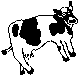

WELCOME TO THE FARM
Come see what I've been looking after for the past 4 weeks.
Click on the farmer and his farm animals below to learn more about the process of building this Workbook.
Paddock 1 - Milton
Paddock 2 - Bessie
Paddock 3 - Big Cluck
